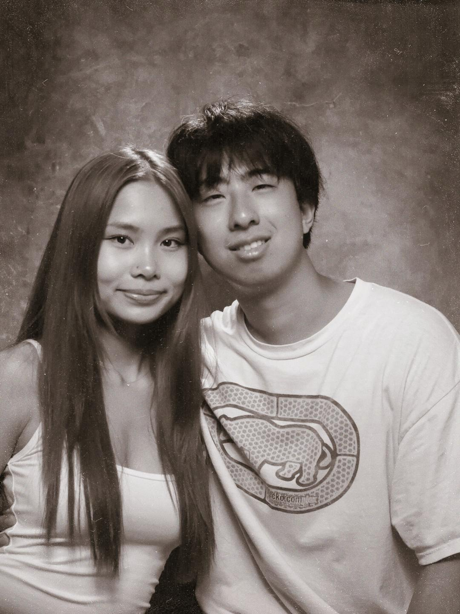
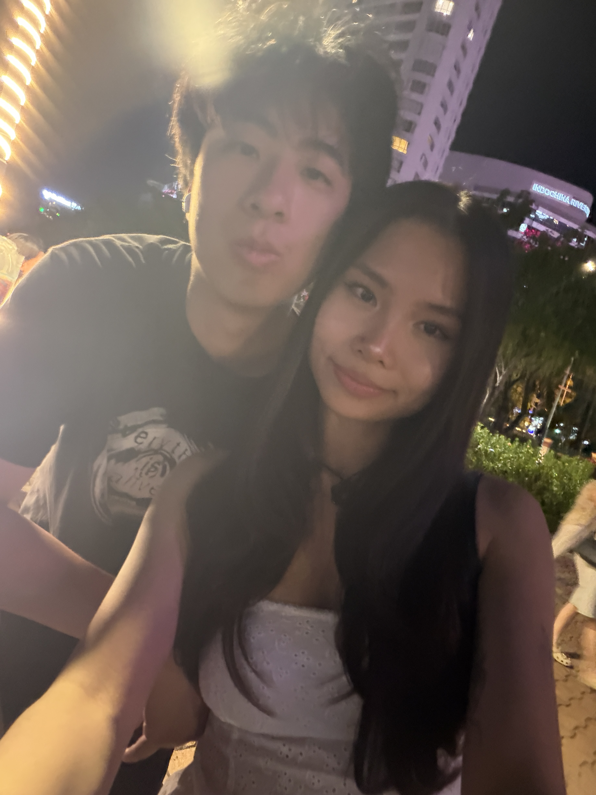
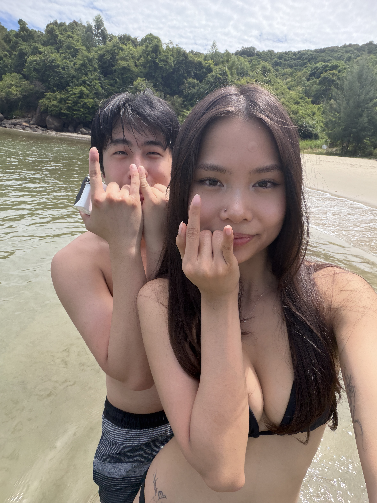
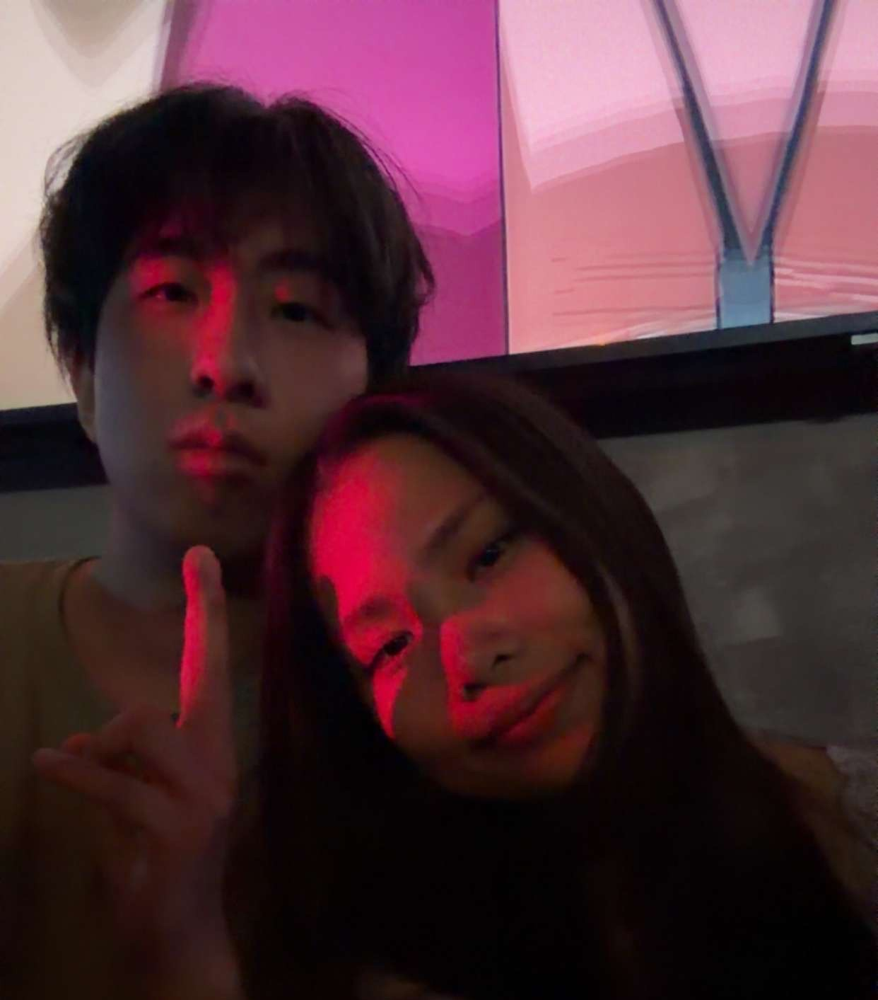
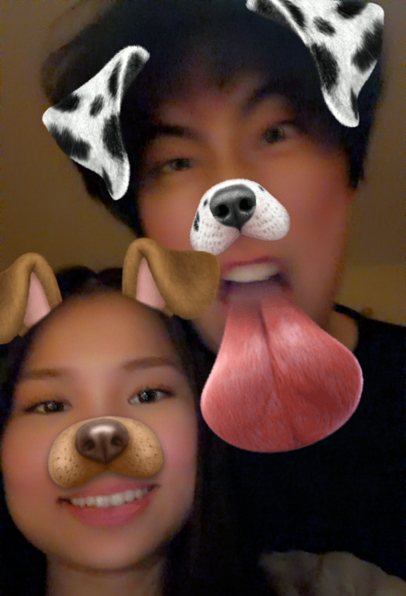
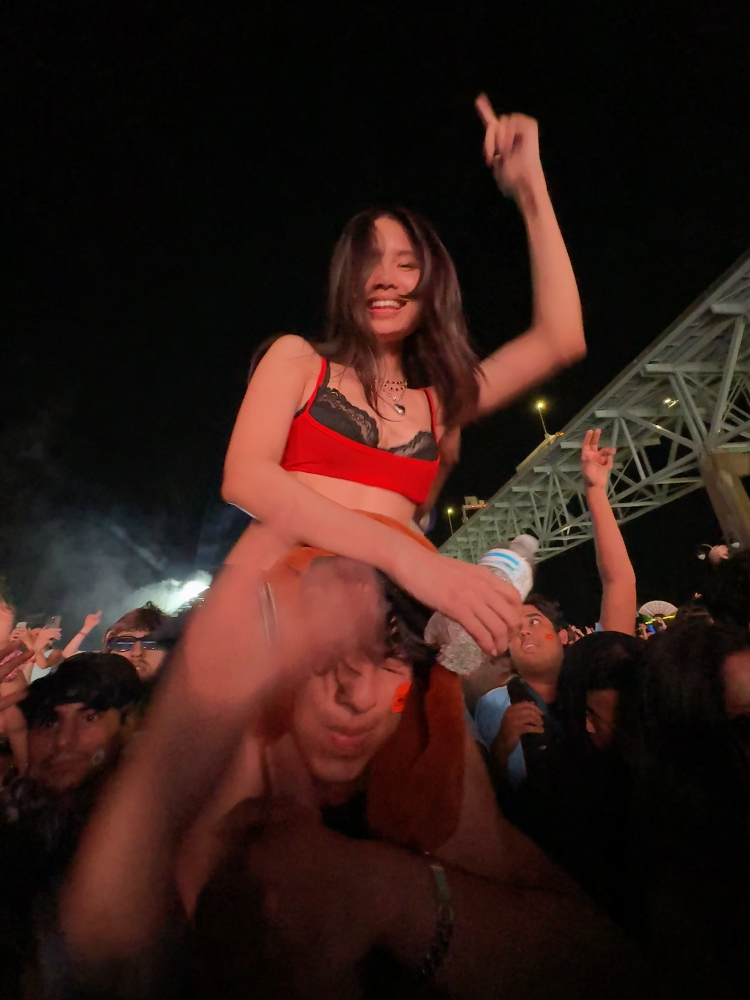

My perspective to our journey together. Happy anniversary Shayla, I love you so much. Thanks for putting up with me :3.
The first time we met in person, I was really shocked that you were willing to drive almost 2 hours to see me. I thought you looked really good and that made me a little nervous at first, but it surprised me how easy it was to talk to you. What I noticed immediately was how you knew how to joke around and share my sense of humor while also being a little flirty. I thought you had ADHD with the amount of times you wanted to move around and I thought it was interesting to see you scream at bugs. I was sad that you had to go at 11pm because I wanted to keep talking with you. I remember how excited I would be to talk to you on the phone at night on school days. I would have my room locked and we would call for 2-5 hours talking about the most random things. Time went by so fast talking to you and the butterflies I felt, how it was hard for me to sleep after ending the call, even when the time was anywhere from 12pm to 4am. The most notable things from the first few weeks were when we were just talking on the RTC rooftop garage and our calm late night date in DC. I wanted to post you on my story that day, before we even started dating, because I wanted to show you off. My friends thought we were dating at this time and I would just tell time you were wife. I didn't want to say we were still talking, so I would say that we were dating because I was so locked in on you. I told all my closest friends that I found the one and they were all hoping the best for me. I couldn't stop sniffing your grey Brandy zip up for the first few weeks that you gave it to me. I think I was sniffing it every second I could and going to sleep with it on my nose, I never wanted to lose the scent or thought of you in my head, it felt like a place of safety and comfort for me. I remember how good it felt for you to always come over and cuddle, just cuddling and not doing anything was enough to make me over the moon those days.
Today was the day I asked you to be my girlfriend, I was so nervous and scared that you would say you weren't ready. For the few weeks leading up to that, I was overthinking when and how I should ask you. I remember how happy I was when you asked me when I was going to ask you out, as I felt relieved that you you wanted to be in a relationship together, but I was also sad because I wanted to make it a surprise. When I asked and you said yes, it felt anti-climatic since I wanted to get it over with and I already knew your answer. I remember how happy I was to finally be able to call you mine and how excited I was to see what our next memories would be because I was certain that we were made for each other. I knew girlfriend day was right around the corner and I was excited to show us off on my story because I was so proud to be able to have you by my side and be with me. I wish we had more photos at the time, because just posting only one photo didn't feel right, but I didn't like a lot of the other photos. When I asked Kim for you wishlist, I was like damn. What was I supposed to do when it's one actual thing, the lip balm, and then it's pink whitney and a usb charger lol. This was the first time I ever made a letter and bouquet of flowers for anybody. I've never even written a letter, even a minor one, for a friend before, so it took a lot of time to figure how to make it romantic and heartfelt, especially as someone who was terrible at writing and opening up about how they truly feel. It was still cringe for me to open up about how I felt around this time (I don't feel that way anymore), but I'm still not able to witness you reading the notes I write for you just because of how much I spill my emotions.
We had our first somewhat long trip together, and that was to Ocean City. The long car ride with you made it a lot more enjoyable and fun, but it was so sad we couldn't really swim in the water since it was so cold. Not to mention you witnessing the first time I ever got pulled over. I was surprised when we started cooking. It was my first time ever cooking for taste and I was so shocked that the alfredo we made tasted better than the one in Olive Garden. Going to Breakaway Philly with you was one of my favorite moments because it was our first rave festival together and it was really fun to get crunk together as well as go around Philly. Eventually we would go on to many more concerts and our first Project Glow together. I hate saying this, but doing ecstacy with you was one of the best nights that I've ever felt. I felt such a strong urge to be even more connected with you and it really did make me realize how grateful that I was, being able to be committed to someone who not only is so willing to be by my side in supporting what I did and liked, someone so affectionate all the time, but also with someone so beautiful inside and out. In the best words I can describe, I literally wanted to absorb you and be together as one, I never wanted to be separated from you even in the slightest. I remember when you would have to lie to your parents about staying over at Kim's so that you could spend the night at mine. We spent our first birthdays together, except on both of ours we wounded up being tired. Me being drunk and sleeping on your birthday and you being drunk and sick on mine. One of the biggest things around this time for me was meeting your parents and exploring your house for the first time. This was when it felt like it was getting very real with me being part of your family. I remember that I wanted to make a good impression, but I was so scared to talk to your dad since he barely talked, so it seemed like he did not like me. I was also intrigued by the kitchen in your garage and with how empty your room felt. Right around Christmas, I was super excited with the first gifts you would give me. At the time, I felt like you gave me so much compared to what I gave to you, and I felt really bad since I made more too. I really loved the mofusand and the hoodie you gave me, I literally wore it like every single day for months. We did a lot of small stuff together throughout this time. It would take us literal months to finish Monster together, though mostly my fault. I was so excited when you were willing to learn a game I loved to play, Catan. I think you learning how to play the game really solidified how much I loved spending time with you, with your open-mindedness and the things you were willing to do for me. I was really grateful that you were willing to spend time with me doing something I loved since I couldn't imagine you finding enjoyment in a strategy map game. It was really fun being able to ragebait you but also actually seeing you get better and beat me. The day you played it with me, I told all my friends how happy I was that you were playing Catan with me in my Civ groupchat. I also really enjoyed how you stuck with me in learning how to play tennis, I really do think you got really good for the short amount of time that you played. I do mean it when I say that you made more progress than me when I started learning. This was also around the time I started working full time, and I find it funny how my coworkers started copying me when I displayed a photo of you. My love for you is so strong that others felt the need to display theirs as well. On Valentine's day, I tried really hard to make more than just a regular note, I really wanted to go out of my way to make something very heartfelt for you. Even just making the 3D heart took me hours and I failed making it my first attempt. I spent a lot of time trying to make detailed reasons why I loved you. I wanted to draw a photo of us together, but I realized how terrible I am at drawing faces, so I had to pick a photo where none of our faces were actually showing, but thankfully we had a good photo of that with us kissing. I never got tired looking at us on my lock screen, and I certainly never got tired looking at the random photos I would take of you throughout our time together, even though you hate the photos I take, it really does bring a smile on my face and makes me happy to see new photos of you everyday. I feel that way especially with the silly videos since it feels like I'm looking back at a time capsule of nostalgic memories that make me feel warm and cozy. Thanks for also giving me my first bouquet of flowers for my graduation, I actually really liked them and I felt special holding it in my photos.
We just recently had our biggest trip ever together to Vietnam. It was really fun exploring a new place with you, as well as being able to experience being with a giant family. Even though I didn't understand the language, it still felt similar to the familiar feeling of China, and on top of that I get to spend it with my favorite person ever. I had the most fun at the beach, swimming and taking photos of you and us. I wish you could've swam with me and rip my foot. It felt like a Mario Kart adventure riding next to you on the mopeds back from the fireworks and in the village, I wished Grab would've let me book multiple rides. It was also funny seeing you freak out over the raccoon gripping you and your pockets and you having to get help from the lady. Sorry for almost killing you on the bike in Hoi An, I never learned how to ride with someone on a bike before, I had to learn with your cousin's life on the line XD. I can't wait for the next few trips we have in the upcoming month with Ocean City and New York. I hope we can go on another big family trip next year or just the two of us. I'm sure that next year will be an even bigger and better adventure with you and I'm excited for the new things that we will experience, learn, and accomplish together. I wouldn't want to go through the challenges of life with anybody else and I'm grateful to have found someone early on in my life that is so supportive and loving to be with me through it all. I love you always and forever Shayla.





